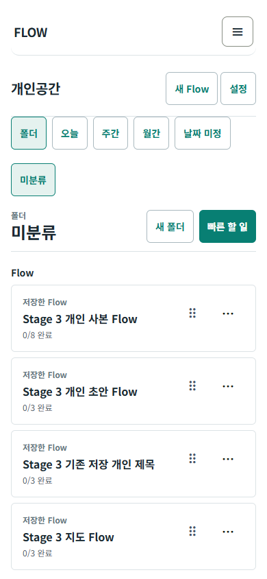
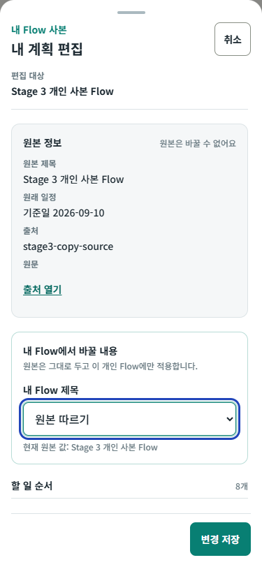
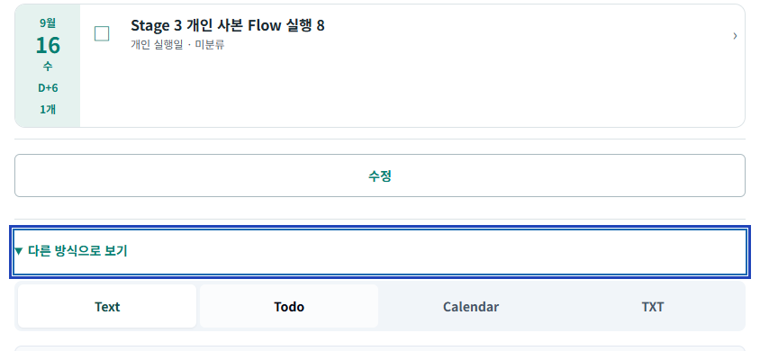
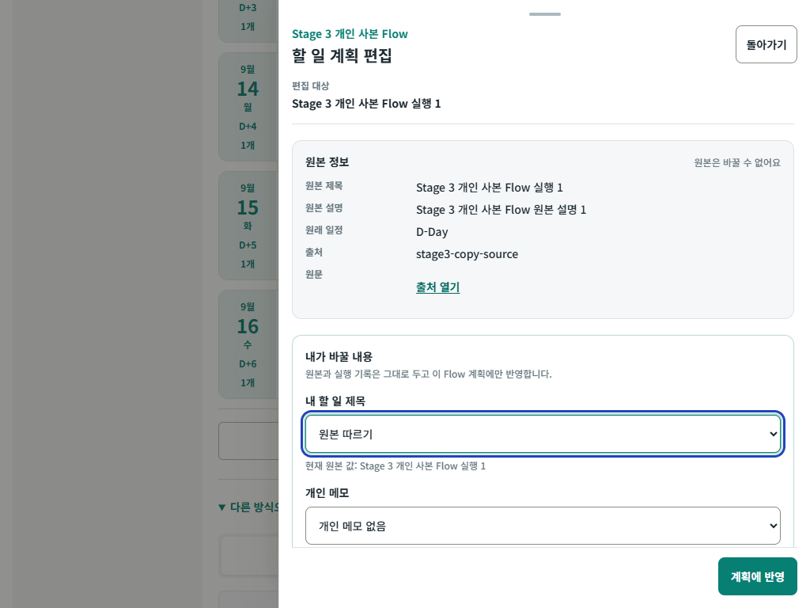
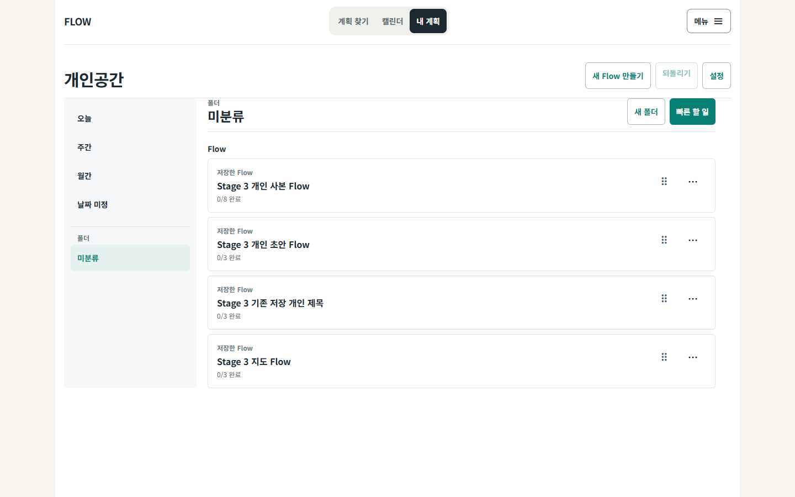

PERSONAL WORKSPACE V4.1 + DEVELOPMENT 1 + DEVELOPMENT 2
세 결과물을 하나의 격리된
PoC 흐름으로 연결했습니다.
개인공간 실행 경험, 네 saved-plan origin의 공통 편집, 일반 텍스트 작성과 결과 projection을 하나의 격리된 React PoC로 연결했습니다. 이 보고서는 무엇을 그대로 반영했고, 무엇을 의도적으로 바꿨으며, 무엇이 아직 증거 부족인지 분리합니다.
STAGED DELIVERY
기획부터 검증까지 한 단계씩 진행
각 단계 안에서 기획, UX/UI 대조, 개발 설계, 구현, 자동·브라우저 검증을 묶었습니다. 제외한 기능도 완료처럼 세지 않고 별도 경계로 닫았습니다.
0
제품 소유권과 통합 shell 결정
v4.1은 개인 조직·실행, 개발 1은 Plan/Item 조정, 개발 2는 Text Authoring으로 역할을 나눴습니다. React를 PoC 정본, 독립 HTML을 fixture 기반 수동 검토 동반물로 정했습니다.
A0 · 9개 결정 기록1
identity·read model·원자 저장
savedCopyId + flowId + itemId identity, 네 origin fail-closed adapter, versioned shadow state, one-snapshot Undo와 exact rollback을 먼저 고정했습니다.
2
일반 텍스트 → 결과 → 개인 Flow
하나의 native textarea, 선택형 구조 보기, 작성 틀과 예시, context helper, exact raw/lineage 보존, 명시적 한 번의 handoff를 연결했습니다.
구조 검토는 필수가 아님 · source bytes 보존 · runtime 11/11, integration 3/33
공통 Plan·Item·Quick 편집과 결과
네 origin과 작성 Flow를 같은 Plan→Item 문법으로 열고, 개인 제목·메모·계획일·순서를 staged 저장합니다. Text·Todo·PoC Calendar·TXT는 같은 effective Item을 읽습니다.
저장 bytes 검증 · retry · 값 기반 receipt · Undo4
이동 조작·focus·반응형 완성
날짜·폴더·순서 이동을 포인터·길게 누르기·메뉴·키보드의 같은 transition으로 모으고, current/valid/invalid 피드백과 의미상 opener focus 복귀를 보완했습니다.
320 보조 + 필수 5 viewport · 실제 기기는 별도5
고급 fidelity 보존·보류 경계
recurrence, 공개 version, table/source 역편집은 정책을 발명하지 않았습니다. 원문·lineage를 보존하고 손실 가능 commit을 막은 뒤 다시 여는 조건을 기록했습니다.
기능 완료가 아닌 안전 경계 완료6
전체 회귀·브라우저·보고
최종 build, 전체 테스트, runtime 시나리오, viewport, 운영 sentinel, 문서 링크와 게시 상태를 서로 분리해 검증했습니다.
내부 자동 검증 완료 · 실제 기기·보조기술·관찰 사용자는 미실행으로 별도 유지THREE SOURCE PRODUCTS
세 결과물을 빠뜨리지 않은 방식
통합 blueprint는 네 번째 제품이 아니라 세 결과물 사이의 소유권·전환 계약으로 사용했습니다.
개인공간 화면·실행 문법
- 폴더·오늘·주간·월간·날짜 미정 IA
- QuickItem과 Flow/Item 실행 목록
- 날짜·폴더·순서 이동, 완료·다시 열기
- 48px 손잡이, 350ms, 8px 취소, safe area
- 실기 touch는 미실행으로 유지
공통 Plan·Item 편집
- 네 saved-plan origin 공통 adapter
- source / personal plan / execution owner 분리
- Item은 부모 draft에만 반영, Plan 한 번 저장
- dirty 이탈·focus 복귀·오류·retry·Undo
- 운영 lifecycle·trash writer는 연결하지 않음
Text Authoring·결과 projection
- 일반 텍스트가 기본, 구조 검토는 선택
- 작성 틀의 이름·설명·예시와 native Undo
- 원문·lineage 보존 뒤 명시적 개인 Flow handoff
- Text·Todo·Calendar·TXT의 같은 Item ref
- Sheet·공개·source 역편집은 부분/제외
TRACEABILITY DELTA
기능·화면 연결별 현재 판정
상세 168개 원 요구, 86개 연결 계약, 386개 하위 판정은 원자 추적 보고서에서 볼 수 있습니다. 아래는 이번 단계 구현이 바꾼 핵심 묶음입니다.
전체 요구 묶음 8개를 표시합니다.
| 묶음 | 요구 | 현재 적용·근거 | 판정 |
|---|---|---|---|
| A1·A3 | 네 origin·작성 Flow의 공통 Plan→ItemD1-001~005,018 · BP-038,080 | 같은 field order, stable ref, parent-draft-only Item apply, Plan 1회 shadow commit. section title과 Flow-level memo owner는 추정하지 않음. | 핵심 충족·일부 부분 |
| A4 | saving·success·same·failure·cancel·UndoD1-011 · BP-059,060,062,063 | 실제 target bytes와 strict parse 뒤 success, exact rollback, 동일 retry descriptor, 버린 draft 값이 보이는 receipt. | PoC 범위 충족 |
| A5 | Text·Todo·Calendar·TXT 결과 동등성D1-021~023 · D2-003,017,019,020 · BP-007,049,069,079 | 한 effective array의 ref/date/order/completion을 네 보기가 공유. 실제 /calendar, Sheet, download는 연결하지 않음. | PoC 충족·운영 부분 |
| A6·A7 | 일반 Text Authoring·작성 틀·선택형 구조D2-022,029~040,043,044,046,050,052~056 · BP-074 | 한 native editor, 예시가 보이는 6개 틀, contextual helper, exact bytes·caret·Undo, 명시 handoff. | 선택 범위 충족 |
| A8 | 날짜·폴더·순서 이동의 입력 동등성V41-004~010,018~020,037,043,051,058,065~068 | 왼쪽 destination, 오른쪽 corridor, insertion line, pointer/menu/keyboard transition, 취소 mutation 0. Flow row 자체 drag는 미제공. | Item 충족·Flow drag 부분 |
| A9 | 모바일·가로·tablet·desktop shellV41-028,033,034,036,049,053,070 · D1-014,015 · D2-007,042,061 | 모바일 한 줄 header, 한 primary CTA, one-column Flow/folder, 16px 입력, sticky panel, safe area와 의미상 focus. | Chromium 레이아웃 통과 · 실기·보조기술 미실행 |
| A10 | recurrence·public·table/source updateD2-016,023~026,041 · BP-019,075 | 원문·lineage·table block 보존, unsupported material commit 차단. occurrence/public/source writer는 없음. | 승인 전 보류 |
| A11 | CreatorDraft 관리D2-057 | 작성 중 초안과 personal handoff만 제공. 목록·검색·복제·보관·공개 후보는 A0 결정대로 보류. | 보류 |
END-TO-END SCENARIOS
통합 시나리오 판정
새 build에서 실행한 여러 runtime 묶음을 시나리오별로 대조했습니다. 복합 근거는 한 테스트가 아니라 Stage 3·4의 관련 검증을 함께 판정한 것이며, 실패 과정의 PoC writer 호출과 최종 성공 state mutation을 구분합니다.
1 · 네 origin → 미분류 → 상세
중복 없이 stable identity로 열고 공통 Plan/Item 편집 문법과 source read-only 구획을 확인했습니다.
2 · QuickItem → 날짜·폴더 → Undo
독립 root Item을 만들고 이동한 뒤 마지막 성공 snapshot으로 복원했습니다.
3 · Flow 폴더 + Item 실행 날짜
Flow Item은 부모 폴더를 상속하고 실행 날짜만 바뀌며 source 일정과 소속은 그대로임을 확인했습니다.
4 · 오늘 완료 → 상세·결과 → 다시 열기
Flow 상세, Todo, Calendar가 같은 ref의 완료 상태를 읽고 override를 제거해 다시 여는 결과를 확인했습니다.
5 · drag·길게·메뉴·키보드
Item/Quick 이동은 같은 transition 결과로 수렴합니다. Flow 폴더 이동은 메뉴·키보드로 가능하지만 Flow row 전용 drag handle은 남아 있습니다.
6 · same·취소·Escape·pointer cancel·오류
same/cancel은 API 호출 0이었습니다. 저장 실패는 허용된 PoC prefix 안에서 시도·rollback할 수 있지만 최종 성공 state mutation은 0이고 prefix 밖 호출도 0이었습니다.
7 · reload·손상 payload
마지막 성공 overlay를 복원하고 손상된 state/recovery는 기존 /my로 fail-closed함을 확인했습니다.
8 · 운영 flow:* bytes 불변
격리 browser context의 sentinel과 허용 prefix 밖 set/remove/clear 호출을 전후 비교했습니다.
EXECUTED EVIDENCE
실제로 실행한 검증
테스트 개수는 중복 합산하지 않고 실행 묶음별로 그대로 적습니다. 진단 중 발견된 실패는 수정 전 증거이며 최종 PASS에 섞지 않습니다.
PoC 모델·componentidentity, authoring, editor, receipt, storage, transition, projection, 5,000-step simulation253 / 253
Stage 1 React runtimeidentity, 원자 저장·Undo, exact raw/lineage, reload·fail-closed4 / 4
Stage 2 React runtime일반 텍스트, 작성 틀·예시, 선택형 구조, 결과와 개인 Flow handoff11 / 11
Stage 2 통합 runtime작성 → 저장 → 개인공간 → 편집·이동·완료와 필수 5 viewport3 / 3
v4.1 core React runtime8개 필수 시나리오, pointer·drag·menu·keyboard, safe area와 필수 5 viewport13 / 13
Stage 3 React runtime네 origin, staged edit, results, failure/retry/Undo, reload/corrupt, 6 viewport13 / 13
Stage 4 React runtimefocus, Quick input parity, current/valid/invalid/cancel, 320+5 viewport4 / 4
Stage 3 화면 캡처workspace/result/Plan/Item × 6 viewportPNG 24장
독립 HTML 모델·runtimefixture-only 수동 검토 동반물, 단일 파일 생성, file URL 브라우저 조작33 / 33 · 14 / 14
전체
npm test관련 기존 회귀를 포함한 6개 TAP 실행 묶음 합계1,738 / 1,738production buildNext compile, lint, type check, static generation18 / 18
보고서 browser단계별 보고서와 상세 추적표, 필수 5 viewport, filter·focus·접근성 구조4 / 4
문서 검사16개 필수 문서와 로컬 링크4,588 / 4,588
tracked diff 검사추적 중인 변경 파일의 whitespace 오류PASS
수정 전 진단에서 결함을 실제로 발견했습니다.첫 Stage 3 run은 저장 뒤 editor가 닫혀도 receipt가
saving에 머무는 문제로 13건 중 7건이 실패했고, 후속 진단에서는 history 정리와 Undo가 경합하는 문제를 재현했습니다. Stage 4 첫 run은 drop target 위 edge auto-scroll 재판정과 320px 순서 영역 넘침을 잡았습니다. 진단 run은 최종 수치에서 제외했고, 수정한 새 build에서 Stage 3 13건과 Stage 4 4건이 모두 통과했습니다.IMPLEMENTATION OUTPUTS
변경한 코드와 검토 산출물
파일을 나열하기보다 책임 단위로 묶었습니다. /my와 /flows/new에는 exact-query gate를 추가했고, 공용 MyPlanExecutionSurface에는 heading/focus와 transfer availability 보강을 적용했습니다. 기본 경로 불변은 회귀 테스트로 확인했습니다.
진입점
app/my/page.tsx, app/my/page.test.ts, app/flows/new/page.tsx, app/flows/new/page.test.ts격리 gate공용 실행 표면
components/flow/my-flow/MyPlanExecutionSurface.tsx와 회귀 테스트focus·transfer 보강제품 화면
components/flow/personal-workspace-poc/의 개인공간·작성·편집·receipt·결과 표면React 정본순수 모델
lib/flow/personal-workspace-poc-*의 identity, read model, state, transition, authoring, projectionshadow state브라우저 계약
tests/e2e/personal-workspace-*의 runtime·독립 HTML·보고서 시나리오자동 증거기획·설계
docs/specs/2026-09-02-flowme-integrated-poc-gap-closure-v1/의 A0와 단계별 계약결정·보류 분리직접 검토물통합 단일 HTML, Android 전달용 단일 파일, 상세 요구 추적표와 이 최종 보고서로컬 전용
실행 계약
package.json의 PoC 집중 테스트 명령재실행 가능BROWSER VIEWPORTS
화면 크기별 평가
아래는 Stage 3 자동 캡처 24장 중 대표 5장입니다. 실제 Android Chrome·iOS Safari 사진이나 관찰 사용자 증거가 아닙니다.





6개 viewport 자동 검사 통과320×700, 375×812, 390×844, 844×390, 1024×768, 1440×900에서 페이지·이동 패널 가로 넘침, console error, page error, 패널 경계 위반, 가려진 핵심 행동이 모두 0이었습니다.
DATA BOUNDARY
운영 데이터를 바꾸지 않는 구조
기존 Flow는 읽고 투영하기만 하며 개인 편집·실행·authoring 변경은 전용 shadow state에만 기록합니다.
허용 쓰기
flow:poc:personal-workspace:v1:*허용 prefix 밖 setItem0건
허용 prefix 밖 removeItem0건
localStorage.clear()0건운영 sentinel byte 변화0건
실제 사용자 profile/backend열지 않음
Stage 3 operating snapshot과 Stage 4 non-PoC snapshot은 byte-for-byte 동일했습니다. 이는 자동 테스트가 만든 격리 localStorage fixture와 browser context의 증거이며, 사용자의 실제 브라우저 profile이나 운영 backend를 직접 조사했다는 뜻은 아닙니다.
OPEN ITEMS
남은 결함·결정·증거 부족
기능 결함, 의도적 제외, 실제 기기·사용자 증거를 섞지 않았습니다.
| 종류 | 항목 | 현재 판단 | 다음 조건 |
|---|---|---|---|
| 부분 구현 | Flow row drag | Flow 폴더 이동은 메뉴·키보드로 가능하지만 Flow 자체 전용 drag handle은 없음 | Flow와 Item의 modality parity를 제품 요구로 확정하면 별도 slice |
| 의도적 분리 | Item editor 안 완료 action | staged Plan draft와 즉시 저장 execution을 섞지 않고 목록·상세 action으로 분리 | 하나의 compound transaction UX가 승인될 때 재설계 |
| 보류 | Sheet·실제 Calendar·export·CreatorDraft 관리 | PoC projection 또는 별도 owner이며 운영 writer는 연결하지 않음 | owner·schema·rollback·권한 승인 |
| 제외 | recurrence·public S3·source reverse edit | 원문 보존·fail-closed만 지원 | occurrence/row/version identity와 conflict 정책 승인 |
| 증거 부족 | Android Chrome·iOS Safari·가상 키보드·screen reader·200% 확대 | 미실행 | 실제 기기·보조기술에서 지정 과업 수행 |
| 사용자 검증 | 발견·이해·회복·효용 | 관찰 사용자 0명 | 목표 사용자 관찰 과업과 기록 |
| 기존 의존성 감사 | browserslist, postcss-selector-parser | FAIL · 2건(high 1, low 1) · PoC 기능 실패와 별도 | dependency owner가 영향과 안전한 업데이트 범위를 검토 |
PUBLISH LEDGER
게시 상태
사용자가 요청하지 않은 외부 변경은 진행하지 않았습니다.
commit미진행
push미진행
PR미진행
Preview미진행
Production미진행
관찰 사용자0명
현재 파일은 로컬 검토 산출물입니다. 이 HTML의 필터는 운영 데이터나 localStorage에 아무 것도 저장하지 않습니다.